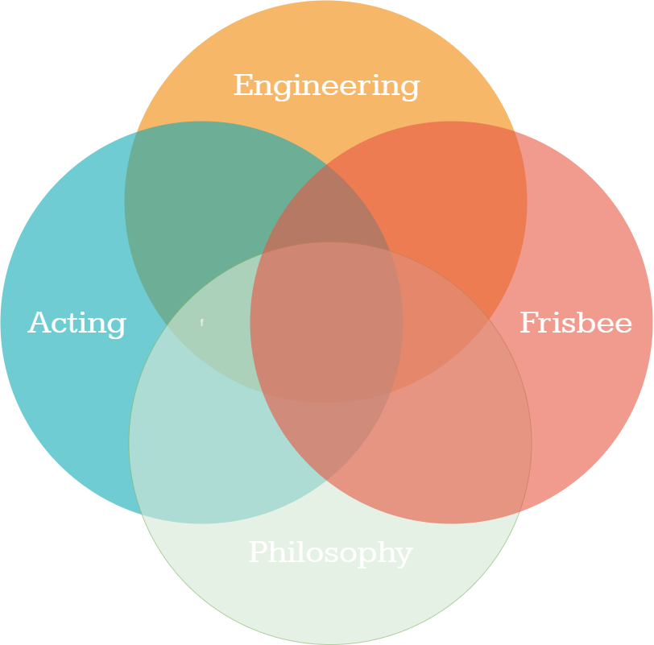
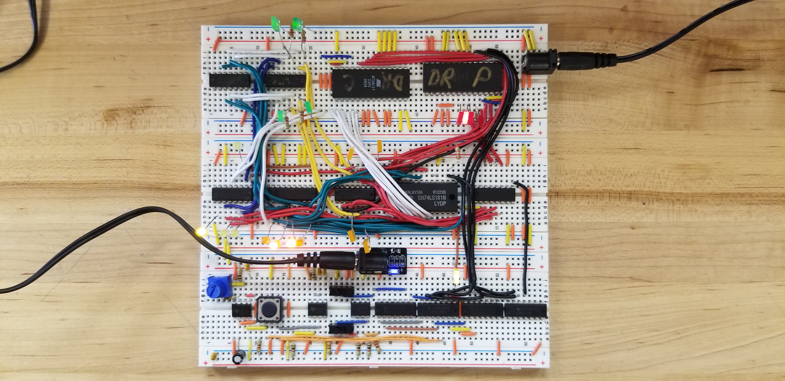

I am a Systems Design Engineering student at the University of Waterloo
with a planned minor in philosophy. I would sum up my entire personality
into a venn diagram of four main categories:
Engineering
a
Acting
a
Frisbee
a
Philosophy
a



Howdy.
I have spent the past few years learning about circuitry and
hardware from the ground up. Beginning with simple LEDs blinking
with entirelly analog components, to Arduino, to custom PCBs
with selected microprocessors: it's all covered in the Design
Engineering Report. Some of my favourite projects include:
Flexible PCB: Snake Programmed in assembly (p. 115)
This project
Bluetooth Photoframe (p. )
We lit
Four bit Programmable Computer (p. 61/109)
This project is outlined in much more detail in it's own dedicated
page since it is my most challenging completed project to date.
Basically, the goal was to create a computer from scratch with
all essential pieces: an ALU, RAM, program counter, program & control
ROM, etc. It took three months to build a breadboard prototype, then
another three months to create a full PCB with an LED matrix output,
an extended program counter, and a separate board to program the device.
The final product was hand soldered and encased in a custom 3D print
with an acryllic cover.

My Projects
This is an overview of all the projects I have done
Andro
An independent, application specific processor for 1 bit quantized neural networks.
This thing is wildin.
CHUMP
Daniel ⚡
dan . raymond